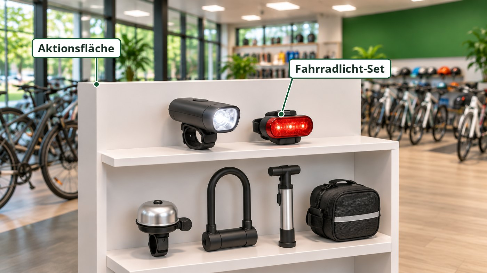
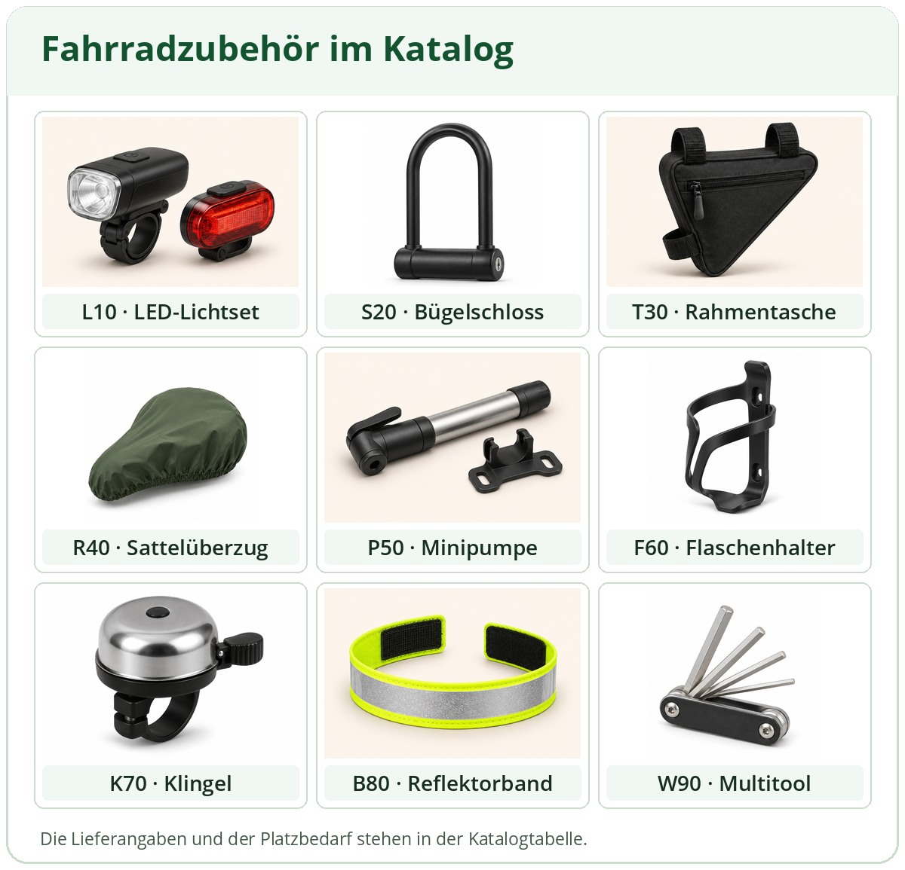
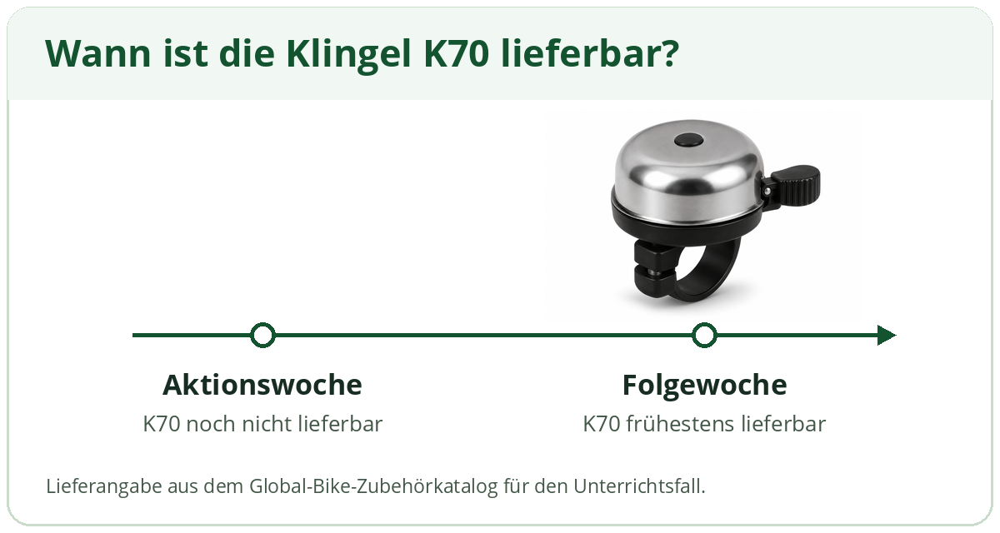
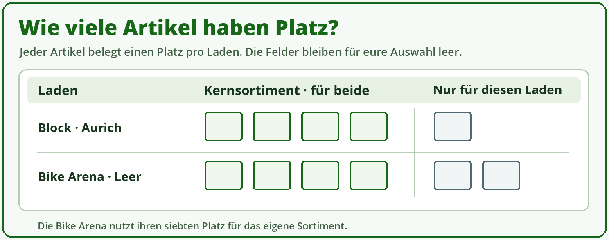

Kundenwünsche ordnen
Das Kernsortiment besteht aus den wichtigsten Artikeln eines Angebots.
Sucht in M1 die häufigsten und wichtigsten Wünsche pro Laden.
Notizen


Für den Schulweg bei Regen braucht ihr anderes Zubehör als für eine lange Radtour. Manche Artikel helfen euch in beiden Fällen. Für die Aktion bei Block und in der Bike Arena entscheidet ihr, welche Waren beide Läden anbieten und was jeder Laden zusätzlich braucht. Prüft dafür Kundenanfragen, Lieferbarkeit und freie Plätze.
Begründete Sortimentsliste. Eure Liste enthält vier gemeinsame Artikel, eine Ergänzung für Block und zwei für die Bike Arena. Alle gewählten Artikel sind während der Aktion lieferbar. Zu jedem Artikel nutzt ihr Kundendaten aus dem jeweiligen Laden. Ihr nennt auch einen lieferbaren Artikel, den ihr weglasst, und erklärt warum.
Die Gewichtung zeigt, wie häufig und wofür die Kompetenz in den Aufgaben gebraucht wird. 1 bedeutet „kurz in einer Aufgabe“, 6 „von der Vorbereitung bis zur Auswertung“.
| Kompetenz | Gewicht (1–6) | Was übe ich? |
|---|---|---|
| F · Fachkompetenz | 6 / 6 | Ich wähle ein gemeinsames Kernsortiment für beide Läden. Ich wähle passende Ergänzungen für jeden Laden. Ich begründe jeden Artikel mit Nachfragebelegen. Ich achte darauf, wie viel Platz da ist und ob die Waren lieferbar sind. |
| P · Personalkompetenz | 3 / 6 | Ich prüfe, ob meine Lieblingsartikel auch zur Nachfrage passen. |
| S · Sozialkompetenz | 4 / 6 | Ich erkläre meine Gründe im Team. Ich einige mich mit den anderen auf eine Auswahl. |
| M · Methodenkompetenz | 4 / 6 | Ich prüfe die Liste mit den Angaben zur Nachfrage, zum Platz und zur Lieferung. |
| D · Medienkompetenz | 3 / 6 | Ich finde im Katalog Angaben zu den Artikeln. Ich halte die Auswahl übersichtlich fest. |
Sebastian Wolf arbeitet bei Global Bike im Außendienst. Er besucht Fahrradgeschäfte und bespricht mit ihnen, welches Zubehör sie für ihre Kundschaft brauchen. Das 2-Rad Center Block in Aurich und die Bike Arena Oltmanns in Leer wollen bei ihm Zubehör für eine gemeinsame Frühjahrsaktion bestellen.

Sebastian hat versprochen, beiden Läden bis heute Nachmittag passende Artikel zu empfehlen. Auf seiner Liste steht die neue Fahrradklingel K70. In beiden Geschäften haben Kunden danach gefragt.
Sein Kollege Christian Klein kümmert sich bei Global Bike um die Lieferung. Er zeigt Sebastian, wann die Artikel bei den Läden ankommen können. „Die K70 kommt frühestens in der Woche danach. Wenn wir sie fest einplanen, bleibt zum Start ein Platz leer.“
Sebastian prüft die Liste noch einmal. „Wir müssen auf beide Läden achten. Block hat wenig Platz. Viele fragen dort nach Zubehör für den Arbeitsweg. Die Bike Arena erwartet Familien, die Zubehör für ihre Ausflüge suchen. Ich will beiden Läden erklären können, warum wir ihnen genau diese Artikel empfehlen.“
Jan Richter leitet bei Global Bike den Verkauf. Er gibt die Liste noch nicht frei. Vier Artikel sollen in beiden Läden stehen. Block bekommt einen zusätzlichen Artikel, die Bike Arena bekommt zwei. Jan gibt euch die Ladenprofile, die Vorgaben für die Auswahl und den aktuellen Katalog. Für die zugesagte Rückmeldung braucht er eure Artikelliste. Die Artikel müssen zur Aktion lieferbar sein. Für beide Läden braucht Jan eine Begründung.
Das Kernsortiment besteht aus den wichtigsten Artikeln eines Angebots.
Sucht in M1 die häufigsten und wichtigsten Wünsche pro Laden.
Notizen
Prüft im Katalog M2 für jeden wichtigen Wunsch, welcher Artikel passt und ob er rechtzeitig kommt. Markiert verspätete Ware.
Notizen
Lies bei Bedarf im Glossar nach. Die Links an den Fragen führen direkt zum passenden Begriff.
Fachbegriffe der LernsituationPlant eure Auswahl mit den Vorgaben aus M3. Schreibt auf, woran ihr einen Artikel für beide Läden erkennt. Schreibt auch auf, wann ein Artikel nur für einen Laden als Ergänzung passt.
Notizen
Wählt einen der drei Arbeitswege. Überlegt, welcher Weg euch bei der Entscheidung am besten hilft. Haltet beim Arbeiten ein Zwischenergebnis und einen Beleg für den Pitch fest. Ein Beleg kann zum Beispiel eine Zahl, ein Maß oder eine Kundenstimme sein.
Euer Auftrag für Jan Richter. Wählt ein gemeinsames Kernsortiment und passende lokale Ergänzungen. Erstellt für Jan Richter die Sortimentsliste aus M5. Begründet vier gemeinsame Artikel, eine Ergänzung für Block und zwei für die Bike Arena mit Nachfragebelegen. Prüft, ob die Artikel lieferbar sind und auf die freien Plätze passen. Erklärt auch, warum ihr einen lieferbaren Artikel weglasst.
Notizen
Testet im gewählten Lernpaket zwei mögliche Auswahlen. Tauscht dabei mindestens einen lieferbaren Artikel aus. Vergleicht für jeden Vorschlag Nachfrage und freie Plätze in beiden Läden.
Notizen
Wählt vier gemeinsame Artikel und die Ergänzungen für die beiden Läden. Legt mit einem Nachfragebeleg fest, welchen lieferbaren Artikel ihr weglasst. Haltet euren Grund fest.
Notizen
Listet die Artikel aus M2 auf. Schreibt zu jedem Artikel, wonach die Kundschaft in beiden Läden fragt (M1) und ob er lieferbar ist (M2). Markiert die freien und belegten Plätze nach M3.
Ihr habt eine Übersicht. Sie zeigt, welche Artikel beide Läden brauchen, welche vor allem in einem Laden gefragt sind und wie viele Plätze frei sind.
Tragt für den gemeinsamen Teil von M5 die vier Artikel ein. Schreibt zu jedem Artikel je einen Nachfragebeleg aus beiden Läden.
Notizen
Hört M4 an oder lest euch die Gespräche vor. Übernehmt die Rollen Global Bike, Block und Bike Arena. Sprecht über Kundenwünsche und passende Artikel. Prüft Belege, Lieferbarkeit und freie Plätze mit M1 bis M3.
Ihr habt eine Notiz aus der Sortimentsrunde. Sie zeigt Gründe für gemeinsame und zusätzliche Artikel. Haltet auch fest, warum ihr einen lieferbaren Artikel weglasst.
Tragt für den gemeinsamen Teil von M5 die vier Artikel ein. Schreibt zu jedem Artikel je einen Nachfragebeleg aus beiden Läden.
Notizen
Erstellt für jeden Artikel aus M2 zwei Karten. Probiert mehrere Auswahlen in den beiden Rastern aus M3 aus. Markiert die gemeinsamen Artikel. Legt zu jedem Vorschlag einen passenden Nachfragebeleg aus M1.
Ihr habt zwei Raster mit Artikeln und Belegen. In den Rastern seht ihr, welche Artikel zu den Läden passen und welche ihr wegen der knappen Plätze weglasst.
Tragt für den gemeinsamen Teil von M5 die vier Artikel ein. Schreibt zu jedem Artikel je einen Nachfragebeleg aus beiden Läden.
Notizen
Ergänzt in M5 die drei lokalen Artikel. Nennt jeweils den Laden, einen passenden Nachfragebeleg und den Grund für die Ergänzung.
Notizen
Rechnet in M5 die Plätze je Laden zusammen. Haltet mit dem Katalog M2 fest, ob eure Auswahl rechtzeitig da ist. Schreibt auf, welchen lieferbaren Artikel Jan weglassen sollte und warum.
Notizen
Prüft eure Liste. Reichen die Plätze? Kommt die Ware rechtzeitig? Gibt es für jeden gewählten Artikel einen Nachfragebeleg? Verbessert die Auswahl oder Begründung, wenn etwas fehlt oder nicht passt.
Nennt zwei Artikel, die für die Aktion gepasst hätten, zwischen denen ihr aber wählen musstet. Erklärt kurz, was den Ausschlag gegeben hat.
Schätzt euch zur Fachkompetenz dieser LS ein. Wählt eine Stufe. Zeigt eine Stelle in eurer Arbeit, die dazu passt.
1 · Ich brauche Hilfe bei jedem Schritt. 2 · Mit einzelnen Tipps komme ich weiter. 3 · Ich kann die Aufgabe selbst lösen und begründen. 4 · Ich kann das auch in einem neuen Fall.
Pitcht euer Lernpaket. Ein Pitch ist eine kurze Vorstellung. Nutzt euer Handlungsprodukt und eure Unterlagen. Ihr habt für den Kurzpitch etwa zwei Minuten. Wenn noch Zeit ist, beantwortet eine Rückfrage.
Zeigt in eurer Liste einen gemeinsamen Artikel und eine Ergänzung für einen Laden. Wählt einen der beiden Artikel. Erklärt mit einem Nachfragebeleg, warum er zum Laden passt.
Notizen
Ladet eure Sortimentsliste hoch. Bei einer Teamarbeit gibt jede Person eine Kopie im eigenen Moodle-Konto ab. Wählt einen Titel und einen Dateinamen ohne eure Namen. Entfernt eure Namen aus der Arbeit und aus den Dateieigenschaften.
Ohne eingerichtete Moodle-Aktivität erhältst du von der Lehrkraft eine codierte Arbeit.
Notizen
Schaut euch die zugeteilte Arbeit an. Moodle lost aus, welche Arbeit ihr bekommt. Ihr seht die Arbeit ohne Namen.
Gebt Rückmeldung. Nutzt die Fragen unter dieser Aufgabe. Nennt eine Stelle, die gut gelungen ist. Schreibt, was die Person verbessern kann. Die Person sieht bei eurer Antwort euren Klarnamen.
Notizen
Lest nach der Freigabe die Rückmeldung zu eurer Arbeit. Verbessert eine Stelle oder erklärt, warum ihr bei eurer Lösung bleibt.
Notizen
Füllt die Aktivität „Feedback“ im Moodle-Kurs aus und sendet eure Rückmeldung dort ab. Falls der Verweis fehlt, öffnet „Feedback“ in der Kursübersicht.
Notizen

BFS dual · Lernfeld 6 · LS 6.2

Websites der Betriebe. Auf seiner Zubehörseite zeigt Block zum Beispiel Beleuchtung, Pumpen und Schlösser. Die Bike Arena zeigt ihr Fahrradzubehör im Onlineangebot. Zubehör bei Block · Bike Arena Oltmanns
Die Zahlen zeigen, wie oft Kunden nach etwas gefragt haben. Diese Nennungen stehen im Beratungstagebuch. Eine Person konnte mehrere Wünsche nennen. Auch wenige Anfragen können für eine Kundengruppe wichtig sein.
| Was Kundinnen und Kunden angesprochen haben | Block, Aurich | Bike Arena Oltmanns, Leer |
|---|---|---|
| Licht für Fahrten bei Dunkelheit | 13 | 8 |
| Fahrrad sicher abstellen | 12 | 7 |
| Schlüssel und Kleinteile während der Fahrt verstauen | 9 | 7 |
| Nassen Sattel unterwegs trocken halten | 11 | 4 |
| Einen Reifen unterwegs aufpumpen | 7 | 12 |
| Trinkflasche auf längeren Fahrten griffbereit halten | 4 | 13 |
| Auffälliges Zubehör für bessere Sichtbarkeit suchen | 6 | 10 |
| Eine leicht bedienbare Klingel nachrüsten | 4 | 5 |
| Unterwegs lockere Fahrradschrauben nachziehen | 5 | 8 |
Beobachtung bei Block. Kundinnen und Kunden fahren häufig bei Regen zur Arbeit und stellen ihr Rad tagsüber draußen ab. Kunden haben mehrfach nach Schutz für nasse Sättel gefragt.
Beobachtung in der Bike Arena. Familien fragen für ihre Ausflüge nach Zubehör fürs Trinken, für Pannen und für bessere Sichtbarkeit. Nach Regenschutz haben sie vor allem nach zwei nassen Wochenenden gefragt.
Die Nachfrageübersicht hilft dabei, mögliche Sortimentslücken zu erkennen.
BFS dual · Lernfeld 6 · LS 6.2


| Artikel | Kurzbeschreibung | Lieferbarkeit zum Aktionsbeginn | Platzbedarf je Laden |
|---|---|---|---|
| L10 LED-Lichtset | Licht für vorne am Lenker und hinten an der Sattelstütze | ja | 1 Platz |
| S20 Bügelschloss | Zum Anschließen des Rahmens oder eines Laufrads, etwa an einem passenden Fahrradständer | ja | 1 Platz |
| T30 Rahmentasche | Tasche für Schlüssel und kleine Gegenstände, mit Klettgurten | ja | 1 Platz |
| R40 Sattelüberzug | Wasserabweisender Überzug für den Sattel eines abgestellten Fahrrads | ja | 1 Platz |
| P50 Minipumpe | Pumpe für unterwegs. Passt auf zwei gängige Ventilarten. Die Typen stehen auf dem Artikel. | ja | 1 Platz |
| F60 Flaschenhalter | Halter für einen Rahmen mit passenden Schraublöchern (Gewindeösen) | ja | 1 Platz |
| K70 Klingel | Klingel mit Daumenhebel für Lenker mit passendem Durchmesser | nein, ab Folgewoche | 1 Platz |
| B80 Reflektorband | Klettband, das Licht zurückwirft. Es macht euch besser sichtbar. | ja | 1 Platz |
| W90 Multitool | Kleines Werkzeug für gängige Innensechskantschrauben | ja | 1 Platz |
BFS dual · Lernfeld 6 · LS 6.2

Raster zum Ausschneiden oder Nachzeichnen
| Laden | Gemeinsame Plätze | Lokale Plätze |
|---|---|---|
| Block | □ □ □ □ | □ |
| Bike Arena | □ □ □ □ | □ □ |
BFS dual · Lernfeld 6 · LS 6.2
Block. „Wir haben fünf Plätze. Viele haben nach Licht, Schlössern oder einem Schutz für nasse Sättel gefragt. Tagsüber stehen die Räder oft draußen. Morgens brauchen viele auch einen Platz für Schlüssel oder Karten.“
Bike Arena. „Sechs Plätze sind für die Aktion fest eingeplant. In den letzten Gesprächen ging es vor allem um Trinkpausen und Pannen. Familien wollten auch wissen, wie man sie unterwegs besser sieht. Einige haben nach Licht und Schlössern gefragt. Den Hauptteil der Aktion möchten wir gerne zusammen bewerben.“
Global Bike. „Vier Artikel sollen in beiden Läden stehen. Dazu kommt ein lokaler Artikel bei Block und zwei in der Bike Arena. Nehmt den aktuellen Katalog. Das Lager meldet gerade: Die Klingel K70 kommt erst in der Woche nach der Aktion.“
BFS dual · Lernfeld 6 · LS 6.2
| Artikel und Artikelkennung | Bereich | Laden | Nachfragebeleg und Begründung | Lieferbereit |
|---|---|---|---|---|
| … | gemeinsamer Kern | beide | … | … |
| … | gemeinsamer Kern | beide | … | … |
| … | gemeinsamer Kern | beide | … | … |
| … | gemeinsamer Kern | beide | … | … |
| … | lokale Ergänzung | Block | … | … |
| … | lokale Ergänzung | Bike Arena | … | … |
| … | lokale Ergänzung | Bike Arena | … | … |
Platzprüfung. Block … von 5 Aktionsplätzen belegt · Bike Arena … von 6 Aktionsplätzen belegt.
Ausgelassener lieferbarer Artikel und Grund: …
BFS dual · Lernfeld 6 · LS 6.2
Prüfen Sie das zugeteilte Handlungsprodukt anhand der gemeinsamen fachlichen Kriterien. Eine Fundstelle kann eine Textzeile, ein Bildausschnitt oder eine Zeitmarke in der Übergabe sein.